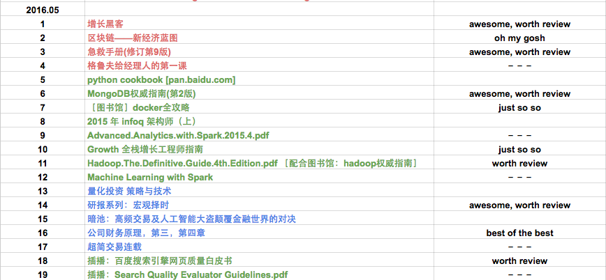
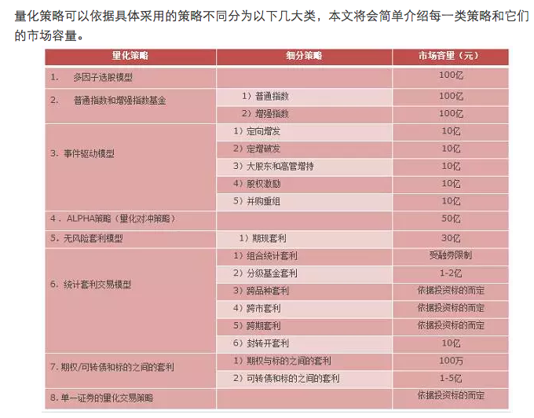

『 读书笔记 』坚持读书 6 个多月的感受
2016-08-05
写在前面
计划是每月读 5-10 本书，书籍类型大概是三个方面的：金融，技术，创业。之所以选择这三个方面，一方面是因为自己对这三个方面都很有兴趣，其次是被 linkedin 创始人 Hoffman 的 ABZ 理论 深度影响。建议大家都看看 abz 理论那篇文章，如果我有空，也会整理一些常用的这类理论模型到博客里的。
月底读书总结的形式都很简单，只是简单的一个列表和简单的书评，对觉得比较好的书会有单独的读书笔记。另外推荐大家用 excel 来做一些简单的工作管理，我现在就用 google docs 来做工作安排和读书计划，个人感觉比一些常用的神马协同软件强大太多了，简单，够用，就行了。工作中见过太多人把时间都花到使用那些协同软件上去，不得不说避重就轻了，适得其反，哈哈。
下面是一张我用 google docs 来做本月读书安排的截图，不同颜色代表不同类别的数据，清晰明了实用。

七八月不准备看新书了，着重想把最近半年看的书做一个小结，其一是 review 一下看过的好书，巩固一下知识，其二也算是温故知新嘛。
ps: 我对好书的定义很简单：
- 给自己有所启发的
- 高质量的，专业的教程类书籍
- 后期会再度回首的书
- 看完后会打算赠送给盆友看的书
- 留着给儿子看的书 [好吧，目前我只有个宝贝侄儿，哈哈]
- 最后一条，印刷质量要好
上月读书总结：『 读书笔记 』6月读书总结｜博文推荐
1. 最近几个月的感受
自从年后开始安排每月读书计划来，每个月都会读一些书籍，分技术，创业，金融几大方面的。一开始不知道是不是能坚持下来，当时的打算是 不管长期下来能否坚持下来，总该试试吧。后来没想到一开始就顺利的完成计划，真的没想到自己能在一个月内看完十来本书，而且都不是滥竽充数的去看，而且后来慢慢的能接受这种节奏了。
最近两月不打算看新书，准备把过去半年来看的书，博文回顾一下，温故知新嘛。
很多朋友问我怎么做到一个月看十来本书的，也问我看完折么多书有什么感受。我有时候同样也在心里问自己这些问题，发现感受颇深，下面分条简单说说自己的感受，希望和大家共勉：
- 凡事只要你想做，都应该去尝试尝试
即使别人说不行，但是如果你真的喜欢，真的想做，也该去尝试尝试。就像《球王贝利》里的贝利一样，推荐大家都可以看看这部纪录片。
- 事情的结果很重要，但过程更重要
之前觉得看完一本书就算是完成了一个任务一样。直到有一天我开始问自己，怎么判断自己看完一本书是真的“看完” 了。这真的是一个很有趣的问题。同样的问题可以拓展的很多方面，老板交代的任务怎么样才算做完了？客户反馈的需求怎么样才算是解决了？
- 爱我所做，做我所爱
大学的时候，经常听同学说不喜欢专业，不喜欢课程什么的；工作后，经常听朋友说对现在的工作内容安排不满什么的。其实我以前有经常有这样的想法，特别是刚毕业的时候，大多数毕业生都是抱着指点江山的心态踏出校园，但基本上刚踏入职场都是先做基础的东西，很多人一开始难以接受这个落差，特别是名牌毕业和海外回来的。我自己最近两年的经验，和最近半年的读书感受，觉得有八个字能解决这类似困惑的：爱我所做，做我所爱 －－－ 在你没有能力负担得起自己的爱好和偏执，在你没有能力选择自己所期望的角色的时候，就好好的爱你现在正在做的事情吧；把你正在做的事情做到极致，在这个过程中不断提高，升华自己，总会有你能自由选择角色的一天。
- step by step, one goes far
这算是对抱着指点江山的年轻人们的一点建议吧，也是自己一直以来的宗旨。很多时候，想要做完一件事情很容易，但想要做好一件事情往往很难。一个产品，从开发，到测试，到预生产，到最后的生产化，每一步都需要人们的齐心协力才能做完做好。不要去做一触而就，一夜暴富的梦，多花精力，一步一步的提升自己各方面的能力和积累经验，一切都会水到渠成。
2. 最近半年看过的好书
- 技术
- effective python
- 大型网站技术架构
- learning spark
- MongoDB权威指南(第2版)
- Hadoop.The.Definitive.Guide.4th.Edition
- Linux工具快速教程
- cloudera spark guide
- 金融
- 金融产品大全
- 估值的艺术
- 公司财务原理，第一章 ～ 第六章
- 主动投资组合管理:创造高收益并控制风险的量化投资方法(原书第2版) - 第一部分
- 研报系列：行业轮动
- quantcon 2016
- 创业
- 逻辑思维 1
- 从0到1
- 创业维艰：如何完成比难更难的事
- couresa : Successful Negotiation: Essential Strategies and Skills
- 增长黑客
- 孙子兵法
- material design
- 生活
- 急救手册(修订第9版)
3. 最近半年看过的好文章
- 技术
这篇文章是真的不错。
- 金融

两篇讲凯利公式的文章，比较不错。
里面的文章都是经典好文啊。
- 创业
- 如何在72小时之内快速搞懂一个陌生行业？
- 数据化解析Term Sheet十大核心条款，关于融资的干货都在这儿了
- 优秀配色方案的探索过程
- 如何快速在一个陌生领域达到优秀水平
- “早知道这些我的公司就不会死”系列（一）：CAC、LTV、PBP
- “早知道这些我的公司就不会死”系列（二）：Cohort Analysis
- 优秀的数据产品经理如何炼成
这些都是讲方法论的，个人觉得想要在自己所在的行业做到优秀，最核心，最关键的因素是自己打心底爱这个职业。人生两大境界：爱我所做，做我所爱。
- 生活
哈哈，轻松一下
4. 其他好东西
IBM Analytics 平台的介绍，video 做得非常好，质量非常高，可以借鉴来做公司介绍，产品介绍，项目介绍等。
不错的在线流程图应用。